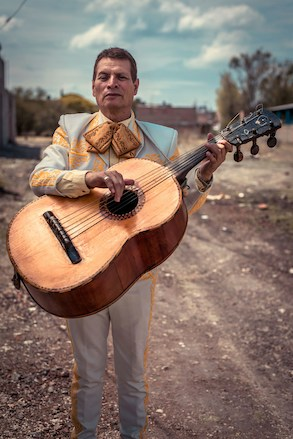

| Photo |
Name |
Biography |
 |
Sam Rivera: Lead Vocalist |
Sam is the charismatic lead vocalist of "Forever in Tune," with over a decade of performing experience. His voice shines on both timeless classics and modern hits, and he loves creating unforgettable moments for couples at their weddings. Sam's favorite songs to perform are romantic ballads, and he believes there’s nothing better than being part of someone’s most important day. |
|
Danny Parker: Lead Guitarist |
Danny, the lead guitarist, has been playing since he was 12 and is known for his smooth riffs and versatile playing style. From jazz to rock, Danny loves blending genres to create memorable performances. His favorite part of being in "Forever in Tune" is crafting the perfect sound for each couple’s big day, making every performance unique. |
|
Larry Lanchaster |
Larry "Lo" is the band’s pianist, known for his classical training and ability to switch between romantic piano solos and energetic pop tunes. Lo's favorite part of being in "Forever in Tune" is the creative freedom to mix classical elements with modern music, making every event special and personal. |
|  |
Mark Johnson: Second Guitarist |
Mark is the heartbeat of "Forever in Tune," providing rhythm and energy to every performance. With a passion for beats that move the crowd, he loves watching guests hit the dance floor. For Mark, being in the band is all about creating the perfect vibe for an unforgettable celebration. |